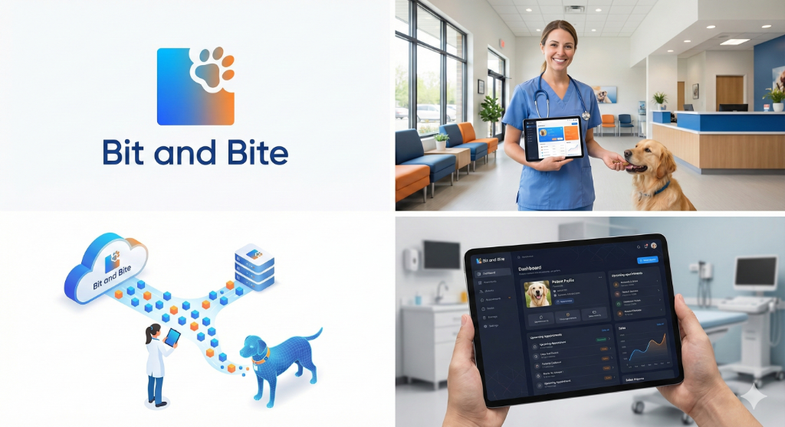

Gestiona pacientes, citas, inventario y finanzas en una sola plataforma unificada. Diseñado para ser hermoso, rápido y seguro.

Potencia tu práctica médica con herramientas de clase mundial.
Sistema de citas intuitivo con recordatorios automáticos. Organiza tu día sin esfuerzo y reduce el ausentismo.
Historial completo de cada paciente. Vacunas, cirugías, recetas y archivos adjuntos en un solo lugar seguro.
Ventas, inventario y reportes financieros. Toma decisiones basadas en datos reales de tu negocio.